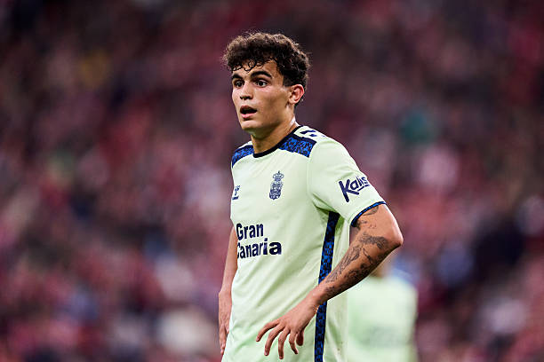

Getafe y Liverpool negocian por Stefan Bajčetić
17 Agosto 2026 · RumorEl Getafe ha abierto conversaciones con el Liverpool para intentar hacerse con Stefan Bajčetić. Según las informaciones publicadas, ambos clubes están estudiando la fórmula de la operación, sin que por el momento esté definido si se trataría de una cesión o de un traspaso.
El centrocampista español busca recuperar protagonismo después de una etapa marcada por los problemas físicos. Su posible regreso a LaLiga permitiría al jugador volver a competir con regularidad y reforzaría una de las posiciones prioritarias para el conjunto azulón.